Vamos conhecer os principais atores/atrizes
Millie Bobby Brown (Onze)
Onze (realizado por Millie Bobby Brown) em seu idioma original se chama Eleven ou El; nasceu como Jane Ives, filha de Terry Ives, e cresceu nos Laboratórios Hawkins, onde foi experimentada por cientistas até o início da primeira temporada. Onze tem poderes telecinéticos e telepáticos, que lhe permitem controlar as coisas com sua mente. Ela escapou do laboratório e fez amizade com Dustin, Lucas, Will e Mike (seu interesse amoroso). Na segunda temporada, Jim Hopper se tornou uma figura paterna para Onze enquanto ela procurava por sua mãe biológica, culminando com ela sendo adotada por Hopper no final da temporada e sendo chamada de Jane Hopper. Na terceira temporada, ela está namorando Mike, para grande aborrecimento de Hopper, e é perseguida pelo Devorador de Mentes, que os soviéticos libertaram abrindo um portal para o Mundo Invertido. Depois que Hopper desaparece quando o portal é finalmente fechado, Onze lê um discurso que Hopper escreveu para controlar as coisas entre ela e Mike, mas ele nunca falou com eles sobre isso, em vez disso, dizendo a Mike para ficar longe de Onze por um tempo para impedi-los de verem um ao outro. Três meses depois, ela confessa a Mike que também o ama e deixa Hawkins com os Byers.
Finn Wolfhard (Mike Wheeler)
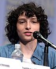
Michael "Mike" Wheeler (interpretado por Finn Wolfhard) é filho de Karen e Ted, o irmão mais novo de Nancy e o irmão mais velho de Holly, e um dos três amigos de Will Byers. Mike é um estudante inteligente e consciencioso que está comprometido com seus amigos. No jogo de Dungeons & Dragons, Mike é o paladino e geralmente desempenha o papel de Dungeon Master. Ele desenvolve sentimentos românticos por Onze (ou On, como Mike e seus amigos preferem chamá-la). Na segunda temporada, é revelado que ele desenvolveu uma tendência mais rebelde, provavelmente decorrente da falta de Onze. Quando Onze reaparece, ele está feliz, mas com raiva de Hopper por mantê-la escondida no ano passado, embora mais tarde ele o perdoe. Um mês depois, os dois vão ao Baile de Inverno juntos e novamente se beijam. No verão seguinte, os dois estão namorando, mas Hopper consegue separá-los, pois acredita que eles estão passando muito tempo juntos e que ele não daria um bom exemplo. Com a intromissão adicional de Max, Onze eventualmente termina com Mike, mas os dois voltam a ficar juntos. Mike foi sincero sobre amar Onze, e quase confessa a ela, mas luta para encontrar as palavras certas. Quando Onze vai morar com os Byers, Mike promete manter contato e agendar visitas para o Dia de Ação de Graças e o Natal. Onze diz a Mike que também o ama.
Gaten Matarazzo (Dustin Henderson)
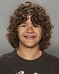
Dustin Henderson (interpretado por Gaten Matarazzo) é amigo de Mike, Will e Lucas, ele é um menino muito inteligente e estudioso e tem displasia cleidocraniana. Em seu grupo de jogo do Dungeons & Dragons, Dustin é o bardo e tem provavelmente o maior conhecimento do jogo, particularmente em monstros. Ele tinha uma queda por Nancy Wheeler, enquanto ele e Lucas tinham sentimentos por Max na segunda temporada, mas Lucas e Max eventualmente acabam juntos. Ele se torna o melhor amigo de Steve Harrington na segunda temporada, que lhe dá conselhos sobre como fazer as garotas gostarem dele. Antes da terceira temporada, Dustin passa um mês no acampamento de ciências e, graças ao conselho de Steve, conseguiu uma namorada chamada Suzie, que se diz uma gênia e é "mais sexy que Phoebe Cates". Os amigos de Dustin estão céticos se ela realmente existe, pois ele não consegue contatá-la através de sua torre de rádio improvisada. Em vez disso, Dustin descobre uma transmissão soviética embaralhada e vai para Steve com as informações em vez de seus amigos devido ao seu ceticismo sobre Suzie. Mais tarde, ele prova a existência de Suzie quando a contatou.
Caleb McLaughlin (Lucas Sainclair)
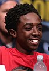
Lucas Sinclair (interpretado por Caleb McLaughlin) é amigo de Mike, Will e Dustin, e irmão mais velho de Erica. Lucas inicialmente desconfia de Onze, mas depois faz amizade com ela. Na segunda temporada, ela se torna um interesse amoroso para Max. Em seu clube de Dungeons and Dragons, Lucas é o ranger. Ele é muito habilidoso com o uso de um estilingue, que o grupo chama de "The Wrist Rocket". Nas duas primeiras temporadas, o estilingue é usado para efeito cômico como uma defesa desesperada de última hora, mas na terceira temporada, é usado para salvar o time do perigo.
Noah Schnapp (Will Byers)
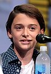
William "Will" Byers (interpretado por Noah Schnapp), o irmão mais novo de Jonathan e filho de Joyce, é um menino gentil e muitas vezes tímido. No grupo de Dungeons and Dragons, Will é o clérigo, mas mais tarde ocasionalmente desempenha o papel de Dungeon Master; ele é referido como "Will the Wise". Na primeira temporada, ele desaparece em algum lugar perto de "Mirkwood" depois de encontrar o monstro que escapou por uma fenda para o "Mundo Invertido", uma dimensão alternativa descoberta pelos cientistas do Laboratório Hawkins. Schnapp foi promovido a regular na segunda temporada, depois de recorrente na primeira Na terceira temporada, as preocupações de seus amigos com suas namoradas levam Will a se sentir um estranho. Sua ligação com o Devorador de Mentes ajuda o grupo a saber quando ele está ativo. No final da temporada, ele sai de Hawkins com Joyce, Jonathan e Onze. Na quarta temporada, Will começa a pintar para uma pessoa desconhecida, enquanto testemunha Onze sendo intimidada por Angela. Depois de confrontar Mike sobre seu relacionamento, os dois testemunham Onze bater no rosto de Angela em retaliação ao bullying. Depois de serem colocados em prisão domiciliar pelos agentes de Owens, eles são resgatados por Argyle. Depois de encontrar o número para NINA, eles procuram a ajuda da namorada de Dustin, Suzie, em Salt Lake City.
Winona Ryder (Joyce Byers)
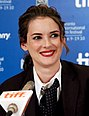
Joyce Byers (interpretada por Winona Ryder) é mãe a de Will e Jonathan Byers e é divorciada de Lonnie Byers, pai de seus dois filhos. Joyce é uma mulher muito carinhosa e determinada que trabalha como balconista na Melvald's General Store no centro de Hawkins. Ela nasceu e foi criada em Hawkins e frequentou a Hawkins High School com o futuro chefe de polícia Jim Hopper e seu interesse amoroso na segunda temporada, Bob Newby. Após o desaparecimento de seu filho Will na primeira temporada, ela começa a se cominicar com Will atraves de lâmpadas natalinas, fazendo-a parecer louca para as demais pessoas. Quando Will é encontrado, o menino começa a ser possuído por uma criatura do Mundo Invertido na segunda temporada, fazendo Joyce procurar ajuda do Laboratótio de Hawkins, onde descobre um portal para a outra dimensão. Na terceira temporada, ela planeja vender sua casa e sair de Hawkins, para desgosto de Hopper, que tenta convencê-la a sair com ele. Joyce está mais interessada em descobrir por que os ímãs em sua casa estão caindo de sua geladeira, e enquanto investigam o motivo por trás disso, ela e Hopper descobrem um Conspiração Soviética. Depois de se infiltrar em um laboratório da União Soviética sob o novo shopping Starcourt Mall, onde os soviéticos abriram outro portal para o Mundo Invertido, Joyce é forçada a fechar o portal desligando a máquina usada para abri-lo com Hopper na sala, causando a aparente morte dele. Ela então assume a custódia de Onze, mudando-se com ela e seus dois filhos de Hawkins três meses depois.
David Harbour (Jim Hopper)
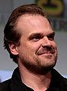
James "Jim" Hopper (interpretado por David Harbour) também chamado de "Hopper" e "Hop", é o chefe do Departamento de Polícia de Hawkins. Hopper viveu em Hawkins a maior parte de sua vida, tendo frequentado o ensino médio com Joyce Byers e Bob Newby em meados da década de 1950. Nesse período, Hopper não era um aluno exemplar e passava todo o seu tempo matando aula e fumando cigarros com Byers e Newby durante o quinto e sexto período. Hopper também era um típico aluno mulherengo, onde ele relata que mentia pra sua mãe sobre está na equipe de debate quando na realidade ele estava fazendo sexo com várias garotas. Depois de se formar no ensino médio, por volta da década de 1960, Hopper serviu na Guerra do Vietnã e se tornou um veterano.
Ele logo conheceu uma mulher chamada Diane e eles logo deram à luz uma criança chamada Sara em abril de 1971. O casal se casou em 1972 e se mudou para Nova Iorque onde Hopper trabalhou na força policial, período futuramente detalhado por ele para Onze no livro Stranger Things: Darkness on the Edge of Town. Hopper e Sara eram extremamente próximos, brincando no parque e lendo livros juntos, no entanto, Sara foi diagnosticada com câncer em algum momento entre 1977-1978. Apesar de receber tratamento quimioterápico, Sara não conseguiu se recuperar, falecendo ainda jovem. A morte de Sara acabou abalando o casamento de Hopper e Diane e ambos se divorciaram. Hopper, devastado, decidiu deixar Nova Iorque e retornou para Hawkins em 1979, onde se tornou chefe de polícia do Departamento de Polícia de Hawkins, uma ocupação amplamente despreocupada devido à baixa taxa de criminalidade da cidade. Hopper começou a depender de álcool e medicamentos prescritos para passar seus dias e começou a dormir com mulheres muito mais jovens que ele.
Ao longo da série, Hopper desenvolveu uma relação afetiva com Onze e decidiu adota-lá no final da segunda temporada. Na terceira temporada, ele tenta separar Onze e Mike, pois o relacionamento deles está indo rápido demais para ele, enquanto tenta conquistar Joyce romanticamente. Através de Joyce, ele mais uma vez se envolve em uma investigação sobre o sobrenatural, levando-os a descobrir uma conspiração soviética. Ele é dado como morto em uma explosão causada por uma máquina russa usada para abrir um portal para o Mundo Invertido. Na quarta temporada, é revelado que Hopper sobreviveu a explosão da máquina, porém ele foi capturado por guardas russos e levado a um campo de prisioneiros em Kamchatka, Rússia.
Charlie Heaton (Jonathan Byers)
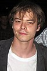
Jonathan Byers (interpretado por Charlie Heaton) é o irmão mais velho de Will e filho de Joyce, é quieto e é considerado um estranho na Hawkins High. Ele é um aspirante a fotógrafo e muito próximo de Joyce e Will. Ele começa a namorar Nancy no final da segunda temporada. Ambos se tornam estagiários no Hawkins Post na terceira temporada, mas acabam sendo demitidos por seu editor por perseguir uma história. Ele luta contra os bandidos do Mundo Invertido antes que ele e sua família decidam se mudar para a Califórnia. Jonathan faz um novo amigo chamado Argyle, com quem fuma maconha secretamente. Depois que ele, Will e Mike são colocados em prisão domiciliar, Jonathan pede a Argyle para resgatá-los dos agentes de Owens. Quando soldados armados os atacam, Argyle os leva para um local seguro. Jonathan, que planejava frequentar a faculdade com Nancy, revela a Argyle que foi aceito em uma faculdade comunitária. Depois de conseguir o número de NINA, eles procuram a ajuda de Susie.
Natalia Dyer (Nancy Wheeler)
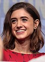
Nancy Wheeler (interpretada por Natalia Dyer) é a filha adolescente de Karen e Ted, irmã mais velha de Mike e Holly Wheeler. Inicialmente, Nancy é uma pária na escola até que o popular estudante Steve Harrington se interessa por ela. O relacionamento deles dura até o início da segunda temporada, quando ela começa a namorar Jonathan Byers depois de alguma ajuda do teórico da conspiração Murray Bauman. Ela é altamente proficiente com armas de fogo, apesar de uma notável falta de treinamento ou prática. Ela foi vista usando pistolas, revólveres, rifles e espingardas. Na terceira temporada, Nancy e Jonathan trabalham como estagiários no Hawkins Post, onde Nancy é submetida a assédio sexista por seus superiores masculinos. Eventualmente, ela e Jonathan são demitidos por perseguir uma história contra os desejos de seu editor, mas Nancy continua a investigar o caso graças às palavras encorajadoras de sua mãe, levando a vários desentendimentos com os Esfolados controlados pelo Devorador de Mentes do Mundo Invertido. Na quarta temporada, Nancy começa a trabalhar como editora em seu jornal escolar e quando uma série de mortes estranhas de adolescentes se inicia, ela começa a investigar e chega a um suspeito preso chamado Victor Creel, que teve sua família morta nos anos 60 da mesma forma que os adolescentes. Nancy descobre que o autor das mortes é o monstro Vecna, e vai com Steve, Robin e Eddie para o Mundo Invertido descobrir mais. Nancy é colocada em transe por Vecna ao tentar retornar para casa e descobre que ele é na verdade Henry Creel, filho de Victor Creel que realmente matou sua família e culpou suas mortes em seu pai.
Joe Keery (Steve Harrington)
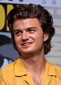
Steve Harrington (interpretado por Joe Keery) é um estudante popular na escola. Ele tenta desenvolver um relacionamento com Nancy e intimidar Jonathan, embora venha a se arrepender disso. Keery foi promovido a regular da série a partir da segunda temporada, depois de recorrente na primeira. Steve então desempenhou um papel mais proeminente, desenvolvendo um relacionamento de irmão com Dustin e se tornando um protetor do grupo principal de crianças. Steve é o dono do que os amigos chamam de "o morcego", um taco de beisebol com vários pregos grandes enfiados nele, feito por Jonathan para lutar contra o Demogorgon. Embora não tenha tido nenhum efeito duradouro contra o Demogorgon, foi capaz de matar alguns Demo-Dogs. Na terceira temporada, ele trabalha no Starcourt Mall no Scoops Ahoy com Robin, por quem ele mais tarde desenvolve sentimentos, embora seja rejeitado depois que ela revela que é lésbica. Ele, Robin, Dustin e Erica descobrem uma base secreta russa sob Starcourt Mall, responsável por ter soltado outro montro em Hawkins. Três meses depois, ele e Robin tentam conseguir emprego na locadora local, onde a única razão pela qual ele é contratado é o fato de ser um “ímã de garotas”. Na quarta temporada, Steve continua trabalhando com Robin na locadora local e fica com ciúmes do relacionamento de Dustin com Eddie. Ele também mostrou ter sentimentos persistentes por Nancy. Ao investigar a possibilidade de outrq entrata para o outro mundo, ele mergulha no Lago dos Amantes, onde descobre um portal para o Mundo Invertido. Ele é arrastado pelo portão e é atacado por morcegos, mas Nancy, Robin e Eddie o resgatam. Embora ferido, Steve os segue até a casa de Nancy, onde eles descobrem uma maneira de usar as luzes para se comunicar com o grupo em Hawkins. Eles vão para o trailer de Eddie e passam pelo portão, mas Steve testemunha Nancy entrar em transe por Vecna.
Cara Buono (Karen Wheeler)
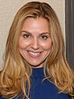
Karen Wheeler (interpretada por Cara Buono) é mãe de Nancy, Mike e Holly, e esposa de Ted Wheeler. Ela é uma mãe amorosa que permanece em grande parte ignorante sobre as atividades de seus filhos. No final da segunda temporada e no início da terceira, ela desenvolve uma atração sexual por Billy Hargrove, em parte por tédio com sua vida familiar, mas finalmente decide não agir com base nesses sentimentos para não ferir sua família. Ela então encoraja Nancy a continuar buscando uma história pela qual ela foi demitida por trabalhar contra as ordens de seu editor.
Matthew Modine (Dr. Martin Benner)
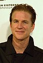
Martin Brenner (interpretado por Matthew Modine) é o cientista chefe do Laboratório Hawkins e dos experimentos realizados lá. Ele é um cientista insensível e manipulador, tendo sequestrado Onze de sua mãe, Terry Ives, a quem mais tarde submeteu a terapia de eletrochoque para destruir a mente e os pensamentos da mulher. Brenner então colocou Eleven em vários experimentos antes que ela escapasse depois de usar suas habilidades para estabelecer uma ligação com o Mundo Invertido. Ele e sua equipe a caçam por toda Hawkins enquanto encobrem as ações do Demogorgon que eles, sem saber, soltaram. Brenner é aparentemente morto pelo Demogorgon no final da primeira temporada, embora um ex-trabalhador chamado Ray tenha afirmado que Brenner ainda estava vivo. Na quarta temporada, é revelado que Brenner ainda está vivo e trabalhando com o Dr. Owens em um projeto chamado "NINA", que eles esperam poder restaurar os poderes de Eleven. NINA é um tanque de privação sensorial especializado que permite a Eleven recordar vividamente as memórias de seu tempo no Laboratório Hawkins. Flashbacks de 1979 mostram que Brenner estava fazendo experimentos em pelo menos treze crianças ao lado de Onze até que todas elas, exceto Onze, foram misteriosamente assassinadas. Brenner culpou Onze pelo massacre.
Sadie Sink (Max Mayfield)
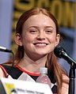
Maxine "Max" Mayfield (interpretada por Sadie Sink) é a meia-irmã mais nova de Billy, uma skatista ávida e a moleca do grupo que chama a atenção de Lucas quando se sabe que ela tem a maior pontuação em Dig Dug. Embora ela nunca tenha jogado Dungeons and Dragons, ela se chama de "zoomer" do grupo, apesar da insistência de Mike de que o termo é inventado. Ela afirma que o papel do "zoomer" é transportar o grupo de um lugar para outro. Max é frequentemente mostrado em desacordo com Billy. Na terceira temporada, ela e Lucas estão namorando após vários rompimentos. Onze se aproxima dela para pedir conselhos quando ela suspeita que Mike está mentindo para ela e Max a convence de que Mike pode ter feito isso para brincar com seus amigos. Max ajuda Onze a explorar o mundo exterior, tornando-se amigas íntimas. Ela também é mostrada como uma fã da Mulher Maravilha.
Na quarta temporada, Max luta com a morte de Billy e frequentemente frequenta o consultório da conselheira escolar devido aos sintomas de TEPT. Ela testemunha Eddie e Chrissy entrarem em seu trailer juntos e depois o vê fugir. Depois de saber da morte de Chrissy, ela conta essa informação para Dustin, então eles rastreiam um dos amigos de Eddie para descobrir a localização de Eddie. Depois de lembrar que Chrissy frequentou o escritório da conselheira antes de sua morte, ela invade a escola e encontra seu arquivo, assim como o de Fred. Ela descobre que Chrissy e Fred sofreram sintomas de TEPT semelhantes aos dela, percebendo que ela é a próxima na lista de vítimas de Vecna. Ela escreve cartas para sua família e lê para Billy em seu túmulo. Ela é colocada em transe por Vecna, mas Lucas, Steve e Dustin aprendem com Nancy que a música pode ajudá-la a escapar de Vecna e tocam sua música favorita, salvando-a de Vecna. Depois que Eddie, Nancy, Steve e Robin mergulham para o Mundo Invertido, Max e o resto retornam à residência dos Wheeler e se comunicam com o grupo que entrou no mundo invertido usando um Lite-Brite. Eles vão para o trailer de Eddie e os resgatam do Mundo Invertido.
Dacre Montgomery (Billy Hargrove)
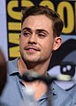
William "Billy" Hargrove (interpretado por Dacre Montgomery) é o descuidado, imprudente e verbalmente abusivo com Max - uma consequência do abuso físico que ele próprio sofre de seu pai. Ele é bastante promíscuo, muitas vezes dormindo com donas de casa entediadas. Na terceira temporada, ele se torna o catalisador do Devorador de Mentes. Flashbacks revelam que Billy tinha um relacionamento próximo e amoroso com sua mãe, mas ela o deixou quando ele era jovem devido ao abuso de seu pai, explicando seu conforto em torno de mulheres mais velhas. Onze lembra a Billy de sua mãe, permitindo que ele se liberte da possessão e se sacrifique para salvar Onze do Devorador de Mentes. Ao morrer, ele se desculpou com Max por todos os seus erros. Na quarta temporada, ele aparece quando Max é colocado em transe por Vecna, onde Billy a culpa por sua morte.
Sean Astin (Bob Newby)
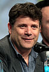
Bob Newby (interpretado por Sean Astin) é um ex-colega de classe de Joyce e Hopper, que dirige o Hawkins Radio Shack, e se torna o namorado de Joyce na segunda temporada, colocando-o em desacordo com Hopper. Enquanto ele, Hopper, um Will inconsciente, Mike, Joyce e Owens estavam presos no Laboratório Hawkins com a energia desligada, ele se ofereceu para redefinir os disjuntores e destrancar as portas. Depois de ter sucesso, ele foi atacado, morto e comido por Demo-Dogs na frente de Joyce.
Paul Reiser (Sam Owens)
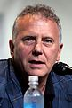
Dr. Sam Owens (interpretado por Paul Reiser) é um executivo do Departamento de Energia dos Estados Unidos que substitui Brenner no Laboratório Hawkins. Owens é tão comprometido com a pesquisa científica e teimoso quanto seu antecessor, mas muito mais empático com os residentes do Laboratório de Hawkins. Owens está encarregado de estudar e tratar os episódios traumáticos persistentes de Will no Mundo Invertido. Ele é demitido do laboratório no final da segunda temporada depois de ser atacado por monstros no Mundo Invertido, e fornece a Hopper uma certidão de nascimento para Onze nomeando a filha adotiva de Hopper. Na terceira temporada, Hopper tenta contatá-lo para enviar reforços e ele aparece brevemente no final da temporada, onde descobre o laboratório russo usado para abrir o portal para o Mundo Invertido e tenta ajudá-los. Na quarta temporada, Owens começou secretamente a trabalhar com Brenner em um programa que pode trazer de volta os poderes de Onze.
Maya Hawke (Robin Buckley)
Robin Buckley (interpretada por Maya Hawke) é uma garota apresentada na terceira temporada, que trabalhou ao lado de Steve na sorveteria Scoops Ahoy do Starcourt Mall. Ela é sarcástica e entediada com seu trabalho, fluente em inglês, espanhol, francês e italiano, e provoca Steve sobre sua incapacidade de flertar com garotas. Robin decodifica uma mensagem de rádio russa e encontra a base junto com Steve, Dustin e Erica. Ao afirmar que ela era obcecada por Steve no ensino médio, a influência do soro da verdade revela que ela realmente ansiava pela atenção de uma das muitas admiradoras de Steve, Tammy Thompson, revelando que ela é lésbica. Na quarta temporada, Robin continua trabalhando com Steve na locadora local, enquanto desenvolve uma paixão por uma colega de banda da escola chamada Vickie. Depois de localizar Eddie, Nancy e Robin vão à biblioteca e procuram informações sobre Creel, descobrindo que Creel culpou um demônio pelos assassinatos de sua família, que eles acreditam ser Vecna, o monstro assassino que causou recentes mortes. As duas visitam Creel em Pennhurst, onde ele revive os assassinatos de sua família. Depois que Steve é arrastado para o Mundo Invertido, Robin, Nancy e Eddie o seguem. Depois de se comunicar com o grupo no Reino Terrestre, eles são salvos do Mundo Invertido no trailer de Eddie.
Brett Gelman (Murray Bauman)
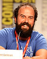
Murray Bauman (interpretado por Brett Gelman) é um investigador particular e teórico da conspiração contratado para investigar o desaparecimento de Barbara Holland. Apresentado pela primeira vez na segunda temporada, ele ajuda Nancy e Jonathan em sua missão de fechar o Laboratório Nacional Hawkins. Na terceira temporada, ele ajuda Joyce e Hopper a se infiltrarem na base subterrânea secreta em Starcourt Mall, onde os russos construíram uma máquina capaz de abrir um portal para o Mundo Invertido. Ele também se mostra fluente em russo. Na 4ª temporada, ele e Joyce viajam para a Rússia para resgatar Hopper da prisão.
Jamie Campbell Bower (Um / Vecna)
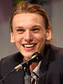
Vecna (interpretado por Jamie Campbell Bower) é um ser assassino do Mundo Invertido e o principal antagonista da quarta temporada. Ele ataca jovens se recuperando de traumas passados, e seu método de matar envolve induzir visões de pesadelo em suas vítimas antes de quebrar telecineticamente seus ossos e implodir seus globos oculares. Vecna mata vários alunos da Hawkins High School, incluindo Chrissy Cunningham, Fred Benson e Patrick McKinney, e quase mata Max até que seus amigos encontrem uma maneira de quebrar sua influência usando música. Ele opera na Residência Creel no Mundo Invertido. Vecna é eventualmente revelado como Henry Creel, filho de Victor Creel que nasceu com habilidades telepáticas. Henry cresceu com uma visão profundamente misantrópica da humanidade depois de ser condenado ao ostracismo ao longo de sua infância. Na década de 1950, ele aterrorizou e assassinou sua mãe e irmã na casa de sua família usando seus poderes, mas o esforço o colocou em coma enquanto seu pai foi preso pelos assassinatos e colocado em uma instituição psiquiátrica. Henry foi colocado sob os cuidados do Dr. Brenner, que o fez a cobaia 001 em seus experimentos com crianças nascidas com habilidades sobre-humanas. Quando adulto, Henry foi feito ordenança no Laboratório Hawkins para ajudar a supervisionar os experimentos de Brenner em várias crianças superpoderosas, incluindo Onze. Brenner colocou um implante no pescoço de Henry que suprimiu seus poderes. Henry fez amizade com Onze depois que ela enfrentou o ostracismo das outras crianças e apontou para ela que ela e o resto dos ocupantes do laboratório eram prisioneiros. Simpatizando com a situação de Henry depois de testemunhar ele sendo punido por Brenner, Eleven destruiu seu implante, restaurando seus poderes. Henry massacrou todas as outras crianças e a maioria dos funcionários do laboratório e tentou matar Onze depois que ela se recusou a fazer parte de sua missão de erradicar a humanidade. Onze dominou Henry e o enviou para o Mundo Invertido, transformando-o em Vecna.